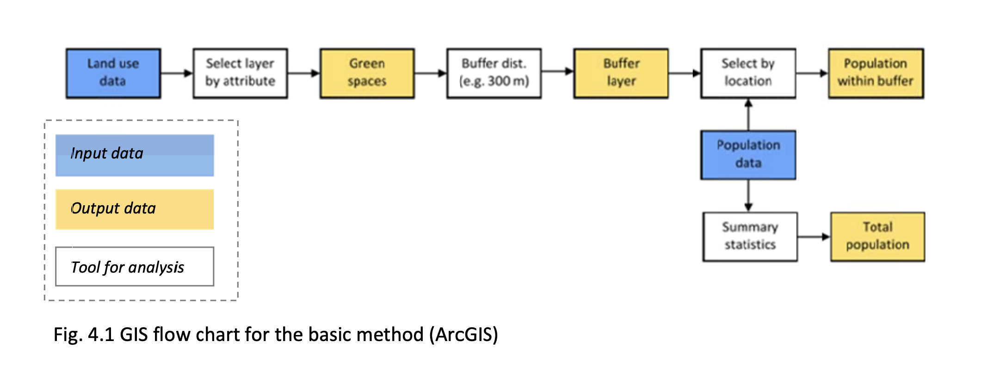
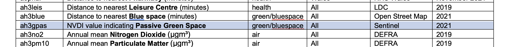
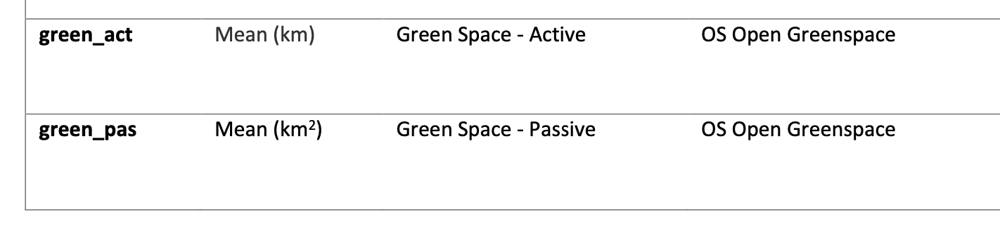
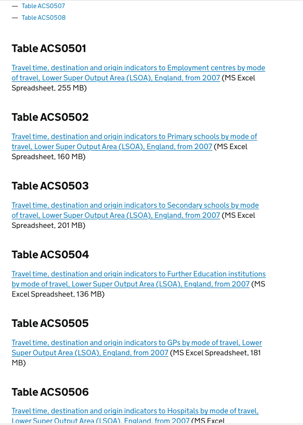
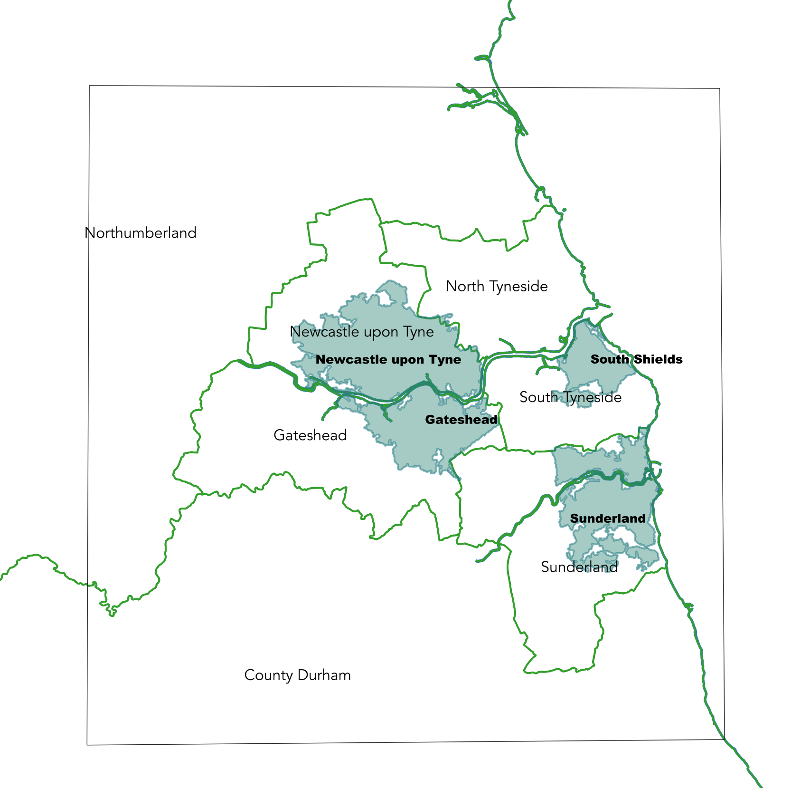
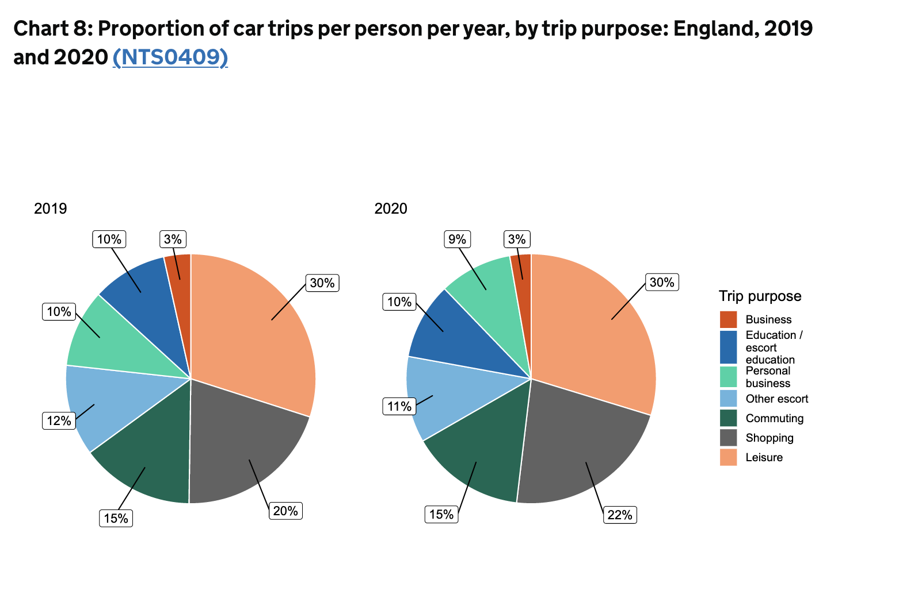
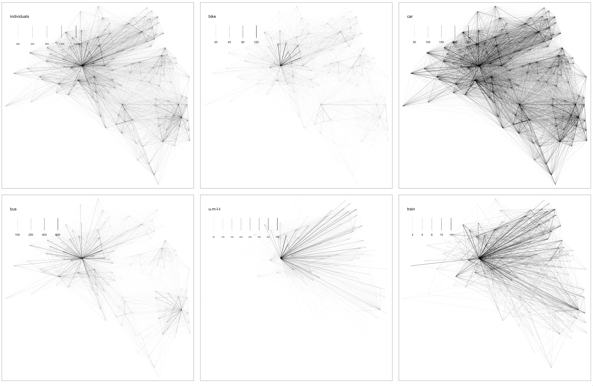
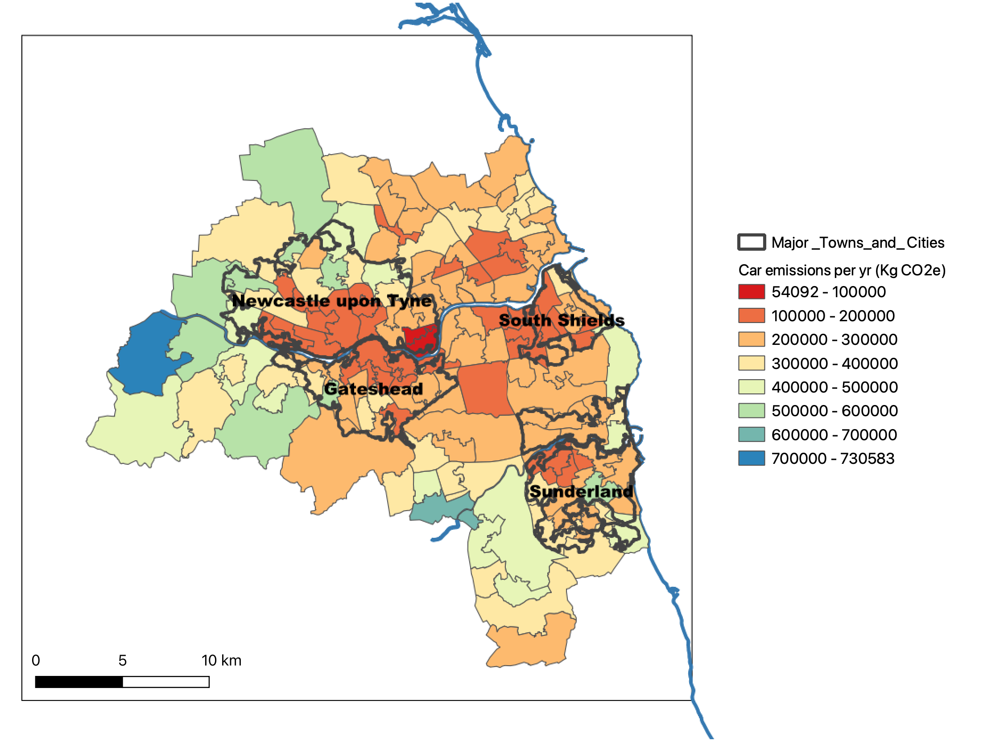

4 Notes
This page is constantly updated on an (almost) daily base, meaning that the order is not dictated by a specific structure, just temporary adding up ideas and development of the project.
NB: in reverse order, that is more recent stuff is at the top of the document.
trying to run automatic publishing with quarto rendering through gh-pages
4.1 December
Hands on code finally?
Let’s start from the indicator of House prices, as it is the only one indicator we have atm that is actual values data, not deterministically defined (see table here).
Exploring Valhalla to start with.
Putting in doubt the use of LUR for what we want to do as we are gonna have aggregated outputs
This regression-based approach estimates the ambient pollutant concentrations at un-sampled points of interest by considering the relationship between ambient concentrations and several predictor variables selected from the surrounding environment
A raster graphic image of the area is generated and intersected with area-level population data to formulate the exposure distribution.
Example of a raster as output of a LUR analysis: 
QUESTION: WHY do we want aggregated (MSOAs) outputs?
I think it’s because we want to be able to compare among scenarios
Inputs from call with Federico (14 Dec): - jobs posting tracker (ONS ???) - from Indeed Hiring Lab (employment website for job listings) - In the United Kingdom, they provide: - regional_postings_gb.csv This file contains the % change in seasonally-adjusted postings since February 1, 2020 for total job postings in each region in the UK. - city_postings_gb.csv This file contains the % change in seasonally-adjusted postings since February 1, 2020 for total job postings in each city in the UK. - BRES (Business Registry and Employment Survey) data - An employer survey of the number of jobs held, broken down by industry - estimates at detailed geographical and industrial levels (from country down to LSOA)
4.2 Agenda - November, 29 [Tue] - In office
- review of the project (objective, idea…)
- discussing the data
- see table in data page
- see sources below:
- accessibility (how to calculate, sources)
- GHG emission (resolution)
- house prices (the least concern?)
- discussing methodology
- 2 processes to generate indicators:
- LUR
- _____________ (accessibility)
- output
- 2 processes to generate indicators:
- name
4.3 November
Need to fine-tune things after last talk with Dani (end of October).
Instead of trying to reproduce carbon.place results, we want to produce a Land Use regression model \(\rightarrow\) LUR
MAJOR UPDATE - We can’t use a regression model for indicators such as accessibility, where the dataset is derived/generated by us and not coming from “actual” measurement (like is the case for GHG emissions or house prices, for instance).
In this case we will need to find another procedure to generate a modelisation. We will then have 2 different procedures to generate the indicators, depending on the type of indicator.
Within these two types, we aim at generating anyways a comprehensive methodology accross indicators to assess/analyse the different scenarios.
A certain scenario can in fact affect different indicators, for example removing a green area to add a working compound can impact positively jobs accessibility, lowering greenspace accessibility.
4.3.1 Name
A good name for the project? (acronym*)
what does “demonstrator” stand for, why should we stick to that term?
- L(O)UD = Land (:egg:) Use Demonstrator :mega:
- demoland 🏙
- 🥚 and 🐥 … 🍳
- LAID = LAnd Use Indicators Demonstrator 🪹
- NEST (?) 🪺
- LOUSE = Land (o) USe Explanator
🪲 (‘louse’ is singular for lice) - DODO 🦤 … just because it’s a nice name
4.3.2 Variables creation
We are searching data for:
- the indicators
- the variables (land use features) to predict the indicators
In a first phase we are concentrating on 4 of the indicators (the numbering refers to the Intro list here):
1.a/b. Pollution/emissions
1.c. Green space accessibility
2.b. Jobs accessibility
2.c. House prices
Below, some notes for each indicator on the data searching process
1.a/b. Pollution/emissions
Indicator: GHG emissions
Predictive variables: no. of trips, distance travelled, mode of transport
data for GHG emissions (total, IE comprehensive of mobility, housing, etc) is available from gov.uk only at LAD level
[not relevant] estimated Per Capita Consumption-Based Greenhouse Gas Emissions for UK Lower and Middle Layer Super Output Areas, 2016. Data Collection
Kilian, Lena and Owen, Anne and Newing, Andy and Ivanova, Diana (2021).
UK Data Service. 10.5255/UKDA-SN-854888
1.c. Green space accessibility
Indicator: Green space accessibility
Predictive variables: number of access points, areal extention of greenspaces, distance from greenspace (access point)
Definition:
proportion of an urban population living within a certain distance from a green space boundary
UGS = Urban Green Space
see Issue on GitHub for relevant literature on indicators, definitions, methodology to generate UGS maps
accessibility is not actual data (like emissions for instance) but it’s itself calculated as an index, so what is the meaning in modeling it?
how we calculate the distance to the nearest green space… or the entrance gate (tricky)
EEA Urban Atlas for UGS data (landcover map) data available here
Download per each metro areas here
Method described in WHO Europe 2016 reportEuropean Urban Atlas Class 1.4.1 (vector data code 14100):
Green Urban Areas (European Commission, 2011)
Minimum mapping resolution 0.25 ha, Minimum width: 10 m
Included:
• Public green areas for predominantly recreational use such as gardens, zoos, parks, castle parks.
• Suburban natural areas that have become and are managed as urban parks.
• Forests or green areas extending from the surroundings into urban areas are mapped as green urban areas when at least two sides are bordered by urban areas and structures, and traces of recreational use are visible.
Not included:
• Private gardens within housing areas
• Cemeteries
• Buildings within parks, such as castles or museums
• Patches of natural vegetation or agricultural areas enclosed by built‐up areas without being managed as green urban areasNote that several green areas in Newcastle fall under the category “Pasture” (see for example Nuns Moor)
Lands that are permanently used (at least 5 years) for fodder production. Includes natural or sown herbaceous species, unimproved or lightly improved meadows and grazed or mechanically harvested meadows. Regular agriculture impact influences the natural development of natural herbaceous species composition.
and allotments fall into “Sports and leisure facilities”

- UK SOURCES
Ordnance Survey Open greenspace map with technical notes here
\(\rightarrow \rightarrow\) open data!
Advantages:- more accurate
- covers England, Scotland, Wales
- has access points!!
- need for data cleaning, as many sport facilities/playgrounds are drawn with a separate polygon within the big park they are part of (overlapping features in the shp)
- the file includes cemeteries AND allottments
Natural England Accessible Natural Green Space Standards in Towns and Cities: A Review and Toolkit for their Implementation (ENRR526)
- review and toolkit
Public Health England report
- … data??
Fields in trust Green Space Index
- interactive map
- they launched GSI in 2019
- they use OS Open Greenspace Map (above) and ArcGIS
- not available as open data
AHAH Access to Healthy Assets & Hazards (Dani suggested)
• A multi-dimensional index developed by the CDRC for Great Britain at LSOA level, contains also access to greenspace (passive) - already calculated
• … different versions:
VERSION 3 (2022)
VERSION 2 (2017)
VERSION 1 (2016)
• the current version (3) only gives the ‘passive’ greenspace, in terms of NDVI values (from Sentinel)

Screenshot from the
metadatafile (Version 3)where the values range between … and … (that’s the index)
though, by the description the “passive” greenspace should be a measure of surface (km2):

Screenshot from the Version 2 Short Technical Report
… see “active” and “passive” greenspace definition below
• the latest pubblication claims to use OSM data:
Daras K., Green M. A., Davies A., Barr B., Singleton A. 2019. Open data on health-related neighbourhood features in Great Britain. Scientific data 6 (1), 107. DOI: 10.1038/s41597-019-0114-6From all the available types of ‘green’ spaces in the OSM data, we selected only areas tagged as public accessible with the following area types: cemetery, common, dog park, scrub, fell, forest, garden, greenfield, golf course, grass, grassland, heath, meadow, nature reserve, orchard, park, pitch, recreation ground, village green, vineyard and wood
…
The green space indicator has been defined as an area measure of access to green space available to each postcode that intersect with a 900 meters buffer zonebut, from this 2019 publication, it looks like they are using the OS dataset (and giving both active and passive access):
Daras, K., Green, MA., Davies, A., Singleton, A., Barr, B. 2019. Access to Healthy Assets and Hazards (AHAH) - Updated version 2017. figshare. Short Technical Report. DOI: 10.6084/m9.figshare.8295842.v1Open data from OS on Green spaces was used for preparing two variables related to the distance from the nearest green space (active) and the total green space areas available to each postcode in a range of a 900-meter buffer (passive) before creating LSOA level averages
Note on Active and Passive Green Spaces
‘active’ is based on the distance people have to travel to their nearest greenspace access point conducive to physical activity […]
The measure is built up from analysis at the postcode level. Distances from each postcode centroid along road networks to the nearest greenspace access point are calculated. Postcodes are matched to LSOAs and an average is taken to get an LSOA score (mean value).The second greenspace indicator labelled as ‘passive’ is based on the proportion of greenspace within a 900 meter buffer (~15 mins walk) from where people live
the (assumed?) first version though uses OSM (like described above):
Green, M. A., Daras, K., Davies, A., Barr, B. & Singleton, A. 2018. Developing an openly accessible multi-dimensional small area index of ‘Access to Healthy Assets and Hazards’ for Great Britain,
but is aware of OS, from the Appendix:There were few open source alternatives (or data that could be shared openly within the terms of their licences) containing similar data during the construction of the indicators and our index. Since then, the Ordnance Survey (OS) have released an open resource of locations of green space (OS Green Space Layer; https://getoutside.ordnancesurvey.co.uk/greenspaces/) . We are currently undertaking a full comparison of OSM and OS to explore the strengths and weaknesses of each data source with the aim of improving our green space metrics, however such an evaluation is beyond the scope of this paper.
• They use Routino open source software https://www.routino.org to identify the shortest path between two locations using the OSM transport network
measured the network distance between the population-weighted centroid of each postcode in the National Statistics Postcode Lookup (NSPL) and the coordinates of the nearest service (e.g. a population-weighted centroid of postcode for off-license)
code here
Conclusions:
- not enough METADATA to be able to understand what to use (missing field names)
- not clear which data source they use in which version (NDVI, OS, OSM?)
- only passive accessibility available in last version
WRITE TO THE TEAM detailed list of questions
2.b. Jobs accessibility
Indicator: accessibility to jobs (measured/calculated)
Predictive variables: working population, n. of available jobs
- accessibility is not actual data (like emissions for instance) but it’s itself calculated as an index, so what is the meaning in modeling it?
- QUANT map - how is it calculated - how to download it … format, etc
- Accessibility Destination Datasets see paragraph below
2.c. House prices
Indicator: house price (avg / zonal effect / dimension / amenities ???)
Predictive variables: dwellings availability, services, accessibility to PT
- what scenario on house prices?
- gov.uk data
most recent source:
House price statistics for small areas in England and Wales: year ending March 2022- Differences to other house price statistics:
There are two sets of official statistics for house prices. In addition to these HPSSAs, the Office for National Statistics (ONS) also produces the UK House Price Index (UK HPI). The HPSSAs measure the number of property transactions and the price paid for properties sold in a given period, while the UK HPI measures the changing value of properties in the housing market. You can find out more about the differences and uses of these outputs in our House price statistics for small areas Quality and Methodology Information (QMI).
- Differences to other house price statistics:
- available at MSOA level:
| Dataset No. | Dataset Name | Periodicity |
|---|---|---|
| HPSSA dataset 1 | Number of sales of residential properties for middle layer super output areas | Quarterly |
| HPSSA dataset 2 | Median price paid for middle layer super output areas | Quarterly |
| HPSSA dataset 3 | Mean house prices for middle layer super output areas | Quarterly |
| HPSSA dataset 4 | Lower quartile house prices for middle layer super output areas | Annually |
| HPSSA dataset 5 | Tenth percentile house prices for middle layer super output areas | Quarterly |
4.3.2.1 Accessibility data
UPDATE
It seems that from 2014 the same type of data is released as Journeytime Statistics
with the list of tables available here
NEED TO CHECK if they give also number of people, that seems missing in the new data format.
For example the variable:
All20_PT/walk |
EMPLO049 | Users within 20 minutes by PT/walk |
does not appear in the new tables, though, we have the total population (Empl_pop) AND the percentage of population per each mode of transport + time, for example (for table 0501):
| Field | Alternate name | Description |
|---|---|---|
100EmpPT15pct |
Emp106 | % users within 15 minutes of employment centres with 100 to 499 jobs available by PT/walk |
100EmpPT30pct |
Emp107 | % users within 30 minutes of employment centres with 100 to 499 jobs available by PT/walk |
100EmpPT45pct |
Emp108 | % users within 45 minutes of employment centres with 100 to 499 jobs available by PT/walk |
100EmpPT60pct |
Emp109 | % users within 60 minutes of employment centres with 100 to 499 jobs available by PT/walk |
… from which we could infer the variable above?
Some useful and valuable datasets on accessibility by several means of transport was (apparently?) available from DFT until 2012, in csv format.
After some strenuous research managed to find the archive for it here.
Accessibility Destination Datasets
- they measure accessibility to key services like:
- food stores
- education
- health care
- town centres
- employment centres
- published for England at national, regional, LAD and LSOA level.
- have they been substited by Journey time statistics data?
Note data at LSOA level is also available in gov.uk in xls format
where also 2013 is included!
Excel datasets containing raw destination data for calculating Accessibility statistics. This gives the locations of the different services used within these calculations: Primary schools, Secondary Schools, Further Education, Hospitals, GPs, Town Centres, Employment Centres
these makes up to 8 tables of accessibility:

screenshot (from gov.uk webpage) of some of the the available tables
4.3.3 Theoretical framework
In a general (non-linear/linear) regression model we have a given dependent variable which we try to explain by several independent/explanatory variables.
In our case for a LUR model we have, considering for example GHG emissions from mobility or housing:
| Dependent variable | actual data for GHG emissions | |
| Explanatory variables | landuse variables | (ex. n. of trips, distance, mode of transport…) |
Formulas here
4.3.4 Some literature on LUR
Questions
LUR is generally used for air quality prediction
…FIND examples of non-air pollutants applications?LUR potential predictor variables extraction … relevant for us? (limited number of variables) \(\rightarrow\) ideally we’d like to perform this as well
LUR output is raster VS vectorial \(\rightarrow\) we’ll need to aggregate the data at some spatial level (MSOAs for instance), introducing some level of approximation
not clear how the spatial connotation enters the model, just because we use data defined at (some) geographic level? YES
- https://en.wikipedia.org/wiki/Land_use_regression_model
A raster graphic image of the area is generated and intersected with area-level population data to formulate the exposure distribution.
- Hoek et al., 2008 “A review of land-use regression models to assess spatial variation of outdoor air pollution”
They review 25 land-use regression studies.
Application of the land-use regression approach for air pollution mapping was introduced in the SAVIAH (Small Area Variations In Air quality and Health) study (Briggs et al., 1997). The technique was initially termed regression mapping
Land-use regression combines monitoring of air pollution at typically 20–100 locations, spread over the study area, and development of stochastic models using predictor variables usually obtained through geographic information systems (GIS)
main components of LUR: monitoring data, geographic predictors and model development and validation
- Bertazzon et al., 2015 “Accounting for spatial effects in land use regression for urban air pollution modeling”
LUR models are described by standard regression equations. Over the past decade, land use regression (LUR) modeling has emerged as a preferred method for assessing exposure to spatially heterogeneous pollutants, including NO2 (Health Effects Institute, 2010). Despite their advantages, LUR models rely on spatial data; therefore, they are subject to the spatial effects associated with the properties of these data.
- Morley and Gulliber, 2018“A land use regression variable generation, modelling and prediction tool for air pollution exposure assessment”
RLUR software to develop LUR model in R;
Open-source code available in GitHub;
GUI with visualisation tools
- Ma et al. 2020 “PyLUR: efficient software for land use regression modelling the spatial distribution of air pollutants using GDAL/OGR library in Python”
Although conceptually quite simple, its successful implementation requires detailed knowledge of the area, expertise in GIS, statistics, and programming skills, which makes this modelling approach relatively inaccessible to novice users.
PyLUR out-performs RLUR for modelling in the Bradford and Auckland case studies examined. Furthermore, PyLUR is much more efficient in data processing and it has a capability to handle detailed GIS input data.
The principles of LUR modelling can be summarized in five steps. First, air pollution monitoring and GIS data are collected within the scope of the study area. Secondly, different kinds of potential predictor variables for each site are generated using GIS buffering or other geospatial analysis methods. Thirdly, multiple regression analysis is carried out to develop one regression equation establishing the relationship between the observed air pollutant concentrations and significant predictor variables selected from a pool of all potential predictor variables. Fourthly, model performance is evaluated using holdout or cross-validation. **Finally*, once the model is successfully validated, it can be applied to predict the concentration at un-sampled points of interest or generate an air pollutant concentration map of the whole study area (Morley and Gulliver, 2018).
- Molter and Lindley, 2021 “Developing land use regression models for environmental science research using the XLUR tool – More than a one-trick pony”
A Python toolbox for ArcGIS Pro that enables the development and application of land use regression models
… relevant for literature (it’s developed for ArcGIS, so no use)
4.3.5 LUR in Python
check out this blog How to Build a Regression Model in Python
Geographic Data Science with Python, book Chap. 11, Spatial Regression
Paper PyLUR: Efficient software for land use regression modeling the spatial distribution of air pollutants using GDAL/OGR library in Python
Note the code is available online on ResearchGate here (find “linked data” tab)
4.3.6 Facts on GHG emissions
Governmental report UK local authority and regional greenhouse gas emissions national statistics, 2005 to 2020
4.4 October
Initial trials
Working on a. mobility based emissions \(\rightarrow\) IE transport data
&
Building base scenario
Roadmap:
- Try to dl/open/visualise SPC data \(\rightarrow\) Note: study case Metropolitan county of Tyne and Wear
- Investigate potentially relevant data from UK Data Services data \(\rightarrow\) any other relevant dataset?
- How to connect/integrate TUS to SPC dataset – why?
- visualise the integrated dataset \(\rightarrow\) base scenario
- think “future scenarios”
 The 5 LADs in the Metropolitan County of Tyne and Wear, highlighted are also the 4 major town areas
Keep in mind when you’ll “generalise” the procedure
IE pass from the study case to a national case
how to select MSOAs for Origin and Destination from the dataset (take off abroad destinations as well)
4.4.1 Defining relations
We can see the Indicators \(I_{i}\), with \(i = \{1, ..., n\}\), as a function of different land uses \(l_{j}\) where \(j = \{1, ..., k\}\) and \(I_{i}\) can be expressed as generic mathematical relation (that we express with the symbol “\(\star\)”“) between several \(l_{j}\) weighted by \(k\) generic weights/parameters \(w_{j}\), as follows:
\[I_{i}(l) = w_1^il_{1} \star w_2^il_{2} \dots \star w_k^il_{k}\]
Different indicators can depend on same landuse variables, and per each indicator the scenarios can be expressed by acting on the paramters \(w_{j}\).
As an example, using the definition above the indicator Mobility based emissions (a.) could be expressed for commuting trips per mode of transport and per each MSOA as:
\[ \begin{align} [\textit{emissions/msoa/year}] & = w_1[trips/day] \star\\ & \star w_2[distance/trip] \star\\ & \star w_3[n\_individuals] \star\\ & \star w_4[\textit{n of commuting days/year}] \star \\ & \star w_5[\textit{CO}_2 \textit{k}] \end{align} \]
where:
- \([trips/day]\) is a fixed value (average per person from DFT data … *)
- \([distance/trip]\) is calculated as shortest distance between the MSOAs’ centroids
- \([n\_individuals]\) is given by the UK Census 2011 commuting flow
- \([\textit{n of commuting days/year}]\) is a fixed value (average per person from DFT data … *)
- \([CO_2 k]\) is the carbon dioxide equivalent emission factor per mode of transport
4.4.2 Working questions:
which year to take into consideration for the analysis? (Census, conversion factors, surveys…)
when I calculate the distance home-place of work, how do I consider the intraMSOA trips (IE within the same MSOA), as I am only taking into account the centroids of the MSOAs?
how we count total number of people (age, people working)
do we give the results per capita (then see point above) or total per MSOA
how many hours for the working from home people (not counting for now, as not using transport)
4.4.3 Approximations
only OD within MSOAs of this county
considering as distance only the pop weighted centroids for each MSOA
London has specific values for CO2 conversion factors (ex for cabs, buses, underground) but only using general values (correct later if needed for London case)
…
Commuting is really just one part of the total travels by car per per person per year:
 source: national travel survey
… it sounds then reductive to consider only commuting trips for emissions!
4.4.4 Python code
Note: first trials in R, as I am more confident with the language, and trying to reproduce the code from carbun calculator for prep_travel_to_work.R,
will then translate to Python
Remember to add in READ_ME a walkthrough.
Using
env.yml\(\dots\) usecondaorpoetry?
4.4.5 Preliminary results
Origin Destination flows of individuals for commuting to work (2011 UK Census data), the Metropolitan County of Tyne and Wear, separated by mode of transport 
Preliminary results for GHG emissions from cars, total per MSOA per year in Tyne and Wear 
4.5 September
Exploratory phase
The idea is to focus on a few indicators (one or two) in order generate a methodology to apply to different variables (IE all the rest of indicators)
Concentrating on Indicators for Net-zero a and b:
- mobility based emissions … integration with SPC \(/\) AB-street?
- housing based emissions
4.5.1 Data availability
(aggregated at LAD level) UK GHG emissions national statistics, estimates per Local Authority Data for 2005 - 2020\(\rightarrow\) this datum is a sum of emissions from 2005-2020
4.5.1.1 a. mobility based emissions
we can get from gov.uk CO2e (carbon dioxide equivalent) emissions factors for several occupations and travel modes, including transport, freight, etc link;<br> We get the emission factors per mode of transport from the tab “Business travel-land” and “homeworking” (for working from home individuals)
OD flows from UK census … only to work and home?
check source\(\rightarrow\) YES \(\Downarrow\)get travel to school flow data from Propensity to Cycle Tool PCT?
Location of usual residence and place of work by method of travel to work (…origin destination flows)
table WU03UK](https://wicid.ukdataservice.ac.uk/cider/wicid/downloads.php) at LAD level<br> safeguarded data!! git sttuslet’s find MSOA data: <br> nomisweb
Note: can download all the tables for “Location of usual residence and place of work by method of travel to work” at different levels (LAD to LSOA, though the lattest is not Open data) here https://wicid.ukdataservice.ac.uk/cider/about/data_int.php?type=2
WU03BEW(with ‘outside UK’ detailed) safeguarded
WU03EW (with ‘outside UK’ collapsed) open
4.5.1.2 b. housing based emissions
Sub-national electricity and gas consumption data, overview link
one table per year (20105 to 2020) of total consumption at region and LAD levels link
one table per year (2010 to 2020) of total consumption at LSOA or MSOA level link
electricity and gas consumption (kWh) at postcode level (England, Scotland, Wales), one table per year, 2013,2015-2020 Experimental
electricity consumption data for 2005 to 2020 as a single table, with years stacked one above the other stacked data
- analogous links for gas consumption
4.5.1.3 People behavior
People behavior and time use from The UK Time Diary Study 2014 - 2015 - UK Time Use Survey carried by NatCen and available from UK Data Service
what we can get from this source: time people spend in different activities, mode of transport (yes?)
4.5.2 Did someone already do this?
Project from Malcom Morgan (Univ of Leeds) …
The PBCC estimates the average carbon footprint per person for each LSOA in England
NOTE:
cool project, GitHub code available but not reproducible (?)
opened issue here https://github.com/creds2/CarbonCalculator/issues/6
4.6 Open general questions
And plausible answer
importance of localised emissions and need for air-flow modelling … not relevant for GHG
what is the Research Question \(\rightarrow\) What are the “best” values in the parametrisation of the land use variables? Could we train the computer to predict these values?
Resolution
LSOAS/MSOAS ? feedback from Dani regarding SS: SS gives conversion to LSOAs \(\Downarrow\)how to generate scenarios - ideas: change parameters’ range/values, run ABstreet simulations…?
integrate with SPC - need to integrate more Census variables? feasible?
Use SPC (individuals’ level data) as we aggregate at MSOA level… what variables are meaningful when aggregated?
can we actually build a methodology, given the different range of indicators and data?
how turn on/off scenarios in the visualisation- different layers in the map
type of output - map, web …
MapBoxMapLibre GL, Leaflet, …
4.6.1 Output / map generation
Note: could generate a website via MapLibre, checked the options